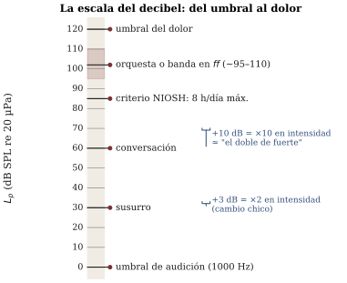
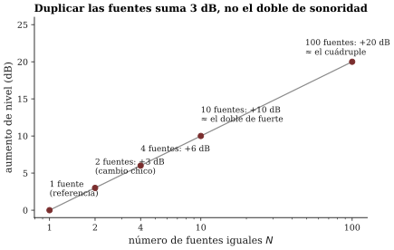
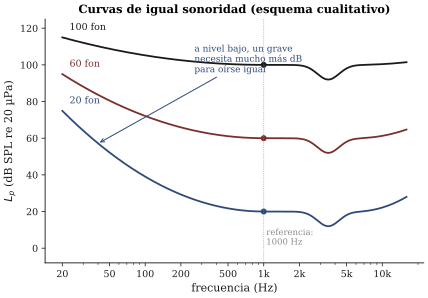

Sesión 06 · Curso Acústica Musical UC Objetivos que cubre: OA4.2 (medir niveles e interpretar el decibel y las curvas de sonoridad en contextos musicales; salud auditiva), OA2.1 (el par intensidad↔︎sonoridad no es lineal ni unívoco).
En la sesión 5 quedó establecido que la altura no copia la frecuencia: el oído reconstruye un patrón y hasta oye un bajo que el parlante no radia. Esta sesión repitió la jugada con el otro par del ticket de salida: la intensidad es del sonido; la sonoridad es suya. Dos sonidos con la misma frecuencia pueden oírse a volúmenes completamente distintos — eso era lo fácil. Lo incómodo era la segunda pregunta: un grave y un agudo con exactamente la misma energía física no suenan igual de fuertes. Usted lo comprobó dibujando su propia curva isofónica, y lo había oído al comienzo: la misma mezcla musical, reproducida muy suave, pierde el bajo y el brillo, aunque en la señal siguen estando.
Para hablar de esto con números primero hay que medir el lado físico. La intensidad de un sonido es la energía que atraviesa cada segundo una superficie dada; en la práctica de esta sesión trabajamos con su prima medible, la presión sonora (en pascales), que es lo que detectan el tímpano, el micrófono y la app del celular. Y aquí aparece el primer dato asombroso del día: entre el sonido más débil que un oído sano alcanza a detectar y el nivel que ya duele hay un factor de alrededor de un millón de millones (10¹²) en intensidad (Benade 1990, sec. 13.1; ROS cap. 6). Ningún instrumento de medición cómodo, y ningún sistema perceptual razonable, trabaja con un rango así en escala lineal.
La solución de la acústica es la misma que adoptó el oído: en vez de sumar energía, comparar por factores. El decibel no es una cantidad de sonido sino una forma de expresar la razón entre dos sonidos (Benade 1990, sec. 13.2). Su gramática completa, con la aritmética mínima del curso:
Para convertir el dB en un nivel absoluto solo falta acordar con qué se compara. La referencia universal es una presión de 20 µPa (veinte millonésimas de pascal), elegida porque coincide más o menos con el umbral de audición a 1000 Hz — Benade la recuerda como “1/3.530.000.000 de la presión atmosférica” (sec. 13.1). El nivel de presión sonora se anota entonces en dB SPL re 20 µPa (notación de diseno/03), y con la referencia puesta en el umbral, la escala queda humana: 0 dB SPL es apenas audible y unos 120 dB SPL rozan el dolor (Benade 1990, sec. 13.8). Entre medio caben, en rangos aproximados, un susurro (~30 dB), una conversación (~60 dB), y una orquesta o una banda en fortissimo (~95–110 dB) (ROS cap. 6; valores típicos, no medidos en nuestras salas — los de nuestras salas los está midiendo usted).

Recuadro opcional (para quienes quieren la fórmula). El nivel se define como con Pa, o equivalentemente sobre intensidades. De ahí que ×10 en presión sean +20 dB pero ×10 en intensidad sean +10 dB: la intensidad va como el cuadrado de la presión, y duplicar la amplitud de presión da +6 dB (Benade 1990, sec. 13.2, fig. 13.2). En el curso basta la tabla de reglas; la fórmula es para el que la disfrute.
Las estaciones dejaron un resultado que contradice la intuición aritmética: al hacer sonar dos fuentes iguales, el medidor no duplicó nada visible — subió unos +3 dB. Las presiones de fuentes independientes no se suman de frente: se combinan estadísticamente (como la raíz de la suma de los cuadrados, Benade 1990, sec. 13.2), de modo que duplicar las fuentes duplica la energía, no la amplitud. Y como +3 dB está lejos del +10 dB del “doble de fuerte”, la consecuencia musical es fuerte: se necesitan unas diez fuentes iguales para que algo suene el doble de fuerte, y unas cien para el cuádruple (Benade 1990, sec. 13.5) (figura 2).

Por eso duplicar los violines de una orquesta engorda el sonido mucho más de lo que lo agranda, y por eso el crescendo de verdad se hace tocando más fuerte, no sumando atriles.La segunda mitad del cuento es que el oído no es un medidor plano: su sensibilidad depende de la frecuencia, y de manera distinta según el nivel. Las curvas isofónicas (curvas de igual sonoridad, graduadas en fones) mapean cuántos dB SPL hacen falta, en cada frecuencia, para igualar la sonoridad de un tono de 1000 Hz. Su forma general — que usted reprodujo a su manera en la demo — dice que somos relativamente sordos a los graves (y a los muy agudos), y que esa sordera se agrava a niveles bajos (Benade 1990, secs. 13.3–13.4; C&G cap. 3, sección Loudness; ROE sec. 3.4) (figura 3).

Eso resuelve la escucha del día: al bajar el volumen, todos los componentes bajan los mismos dB, pero los graves caen más rápido hacia el umbral que el registro medio. La mezcla no perdió el bajo: su oído lo soltó primero. El mismo mecanismo explica el botón “loudness” de los equipos antiguos, y la advertencia de Benade (sec. 13.4) de que ecualizar todo a igual sonoridad produce música de bajos y agudos artificiales: los arreglos y las mezclas ya cuentan con las isofónicas puestas.
De aquí salen dos unidades perceptuales que en el curso se usan solo cualitativamente. El fon etiqueta cada isofónica con el nivel que tiene a 1000 Hz. El son mide la sonoridad misma: 1 son es la sonoridad de un tono de 1000 Hz a 40 dB SPL, y — a diferencia de los decibeles — los sones se suman como cantidades ordinarias: 2 sones más 3 sones se oyen como 5 sones (Benade 1990, sec. 13.4). La regla “+10 dB ≈ doble sonoridad” es exactamente “×2 en sones”.
Lo que usted usó en el celular imita al sonómetro clásico (Benade 1990, sec. 13.8): un micrófono, un filtro y un indicador en dB. El filtro es la ponderación A — una curva que atenúa los graves imitando a grandes rasgos la isofónica de nivel bajo — y por eso las apps reportan dB(A). Basta saber leerla: dB(A) descuenta lo que el oído descuenta; la teoría del filtro no es materia del curso. Las reglas de higiene de la medición salieron solas en las estaciones:
materiales/apps_recomendadas.md), y dos celulares lado a
lado pueden discrepar. Las comparaciones relativas con el mismo
aparato — ¿cuánto subió?, ¿cuál punto de la sala es más
ruidoso? — sí son confiables.La misma aritmética del dB gobierna la salud auditiva del músico, y aquí deja de ser un juego de proporciones. El criterio de referencia ocupacional más citado admite del orden de 8 horas diarias a 85 dB(A), y cada +3 dB (el doble de energía) corta el tiempo admisible a la mitad: 88 dB(A) → 4 h, 91 → 2 h, 94 → 1 h (criterio NIOSH; ROS caps. 30–31). Un ensayo intenso puede vivir en los 90 y tantos dB(A) y una banda amplificada bastante más arriba: la dosis se gasta rápido, y el daño por exposición acumulada es indoloro y no se recupera. Los valores límite de la norma chilena aplicable [POR VERIFICAR: DS 594 y su regla de intercambio]. Las decisiones prácticas que sí están al alcance salieron en la estación E5: medir el propio ensayo, alejarse de la fuente cuando se pueda, y usar protectores (los de músico atenúan de forma más pareja que la espuma) — unos 15–25 dB de atenuación típica [POR VERIFICAR: rango según modelo] compran, por la regla de los 3 dB, muchas veces más tiempo.
La sesión 7 abre con la prueba 1 (módulo 1): entra todo s01–s06, lo de hoy en su versión básica — leer un nivel, aplicar +10/+3, interpretar una isofónica. Y su ticket de salida dejó sembrado el módulo 2: dos flautas en la misma nota, una apenas desafinada. ¿Qué se oye? Algo que no es ni una nota ni dos, y que late. Traiga los oídos descansados.